Rollespillet Alexandria
Rollespillet Alexandria
Læse regler eller kaste os ud i det?
Hvor skal spillerne spise, sove og skide?
Du er død!
Vil du spille igen?
Regler
Regler
GM quizzer dig!
Hvad skal en tabel for kongresser hedde?
- con
- convent
- convention
Windows bryder sig ikke om con!
Du har nul i CON!
Din server er død!
Regler
Før 11th Edition af Windows & Dragons kunne man ikke have
en fil ved navn
con.txt.
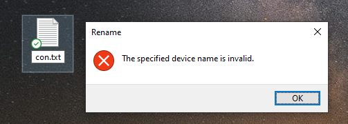
Regler
Tabeller
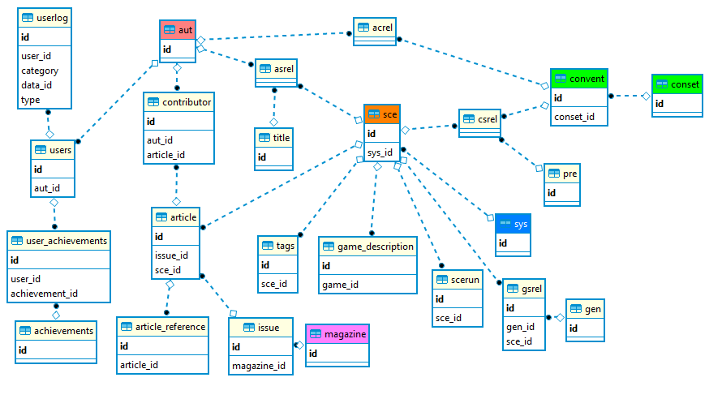
Regler
PHP
<?php
...
function getfilelist ($data_id, $cat) {
global $t;
$files = getall("SELECT filename, description, language FROM files WHERE data_id = '$data_id' AND category = '$cat' AND downloadable = 1 ORDER BY id");
$fmt = new NumberFormatter( Locale::getDefault(), NumberFormatter::DECIMAL );
foreach($files AS $id => $file) {
$template_description = parseTemplate( $file['description'] );
if ( $file['language'] ) {
$languages = explode( ",", $file['language']);
$fulllanguages = [];
foreach( $languages AS $language ) {
$fulllanguages[] = getLanguageName( $language );
}
$template_description .= " [" . implode( ", ", $fulllanguages) . "]";
}
$path = ALEXFILES . getcategorydir($cat) . '/' . $data_id . '/' . $file['filename'];
$files[$id]['path'] = $path;
$files[$id]['extension'] = strtolower(substr(strrchr($file['filename'], "."), 1)); // any reason not to use pathinfo() ?
$files[$id]['template_description'] = $template_description;
if (file_exists($path)) {
$files[$id]['filesize'] = filesize($path);
$files[$id]['filesizetext'] = $fmt->format(round( $files[$id]['filesize']/1024/1024, 1) );
}
}
return $files;
}
...
?>Regler
MySQL
SELECT
COUNT(*) AS antal,
t2.aut_id AS link,
sce.id AS sceid,
sce.title,
COALESCE(alias.label, sce.title) AS title_translation,
t2.tit_id,
t1.aut_id AS rlink,
t1.tit_id AS rtit_id
FROM aut AS a1
INNER JOIN asrel t1 ON t1.aut_id = a1.id
INNER JOIN sce ON sce.id = t1.sce_id
INNER JOIN asrel t2 ON t1.sce_id = t2.sce_id
INNER JOIN aut a2 ON a2.id = t2.aut_id
LEFT JOIN alias ON sce.id = alias.data_id AND alias.category = 'sce' AND alias.language = 'da' AND alias.visible = 1
WHERE
t1.aut_id IN ($inlist) AND
t2.aut_id NOT IN ($notlist) AND
t1.tit_id IN (1,4,5) AND t2.tit_id IN (1,4,5)
GROUP BY
link
ORDER BY
a1.firstname,
a1.surname,
a2.firstname,
a2.surname,
t1.tit_id,
t2.tit_id,
title_translation
Karakterbaggrund

Landsforeningen Sleipner
Atlantis Scenarie Scenarie
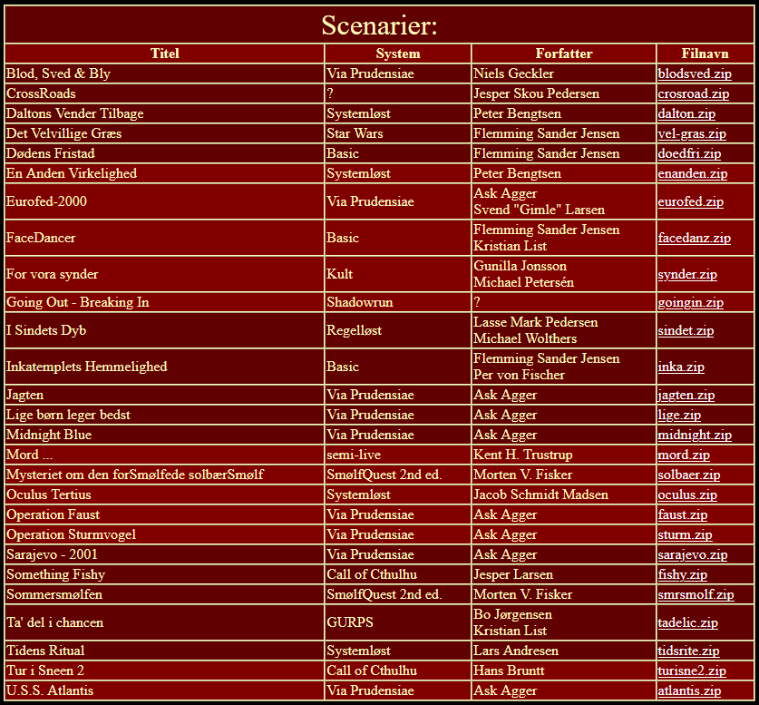
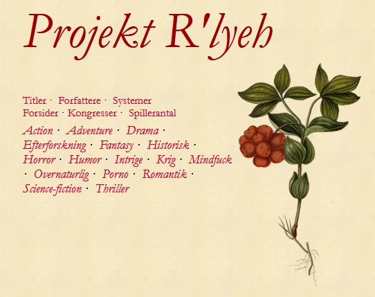
Websitet findes ikke mere
(Foreshadowing)
Alexandria.dk
- Ikke-kommercielt
- Ingen økonomisk støtte
- Ingen organisation
- Går i luften 1. marts 2003
Eventyret er i gang
Vi begynder på kroen …
(med vores hjemmelavede karakter, som har taget nogle levels på forhånd)
Random encounter!
Dansk Varefakta Nævn truer med at
sagsøge dig,
fordi du viderebringer ordet Varefakta i en foromtale.
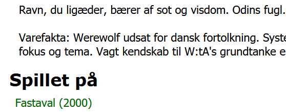
Hvad gør
du?
Peter Brodersen
Jydeholmen 55D, 4.th
2720 Vanløse
2003.07.28
Vedr. misbrug af ordet Varefakta
Vi har på internettet set, at De for hjemmeside for Alexandria under stykket Værnepligt anvender ordet Varefakta.
Vi må i den forbindelse gøre Dem opmærksom på, at ordet VAREFAKTA er indregistreret i forbindelse med Dansk Varefakta Nævns bomærke, og derudover har ordet brugt separat vundet beskyttelse på grund af indarbejdelse. VAREFAKTA må derfor kun benyttes, når der deklareres efter DVN's forskrifter, oplysningerne er kontrollerede, og der på baggrund heraf er givet en mærkningstilladelse.
Det er også en klar overtrædelse af bekendtgørelse af lov om markedsføring nr. 699 af 17. juli 2000, både hvad angår § 2 men især § 5, hvor der står "Erhvervsdrivende må ikke benytte forretningskendetegn og lignende, der ikke tilhører dem, eller benytte andre kendetegn på en måde, der er egnet til at fremkalde forveksling med andres."
Vi må derfor bede Dem omgående og senest
mandag den 11. august 2003
meddele os, hvad De vil gøre for at stoppe misbruget, som vi er overbevist om ikke er sket af ond vilje. De bedes også meddele os, om De anvender ordet VAREFAKTA i andre materialer.
Venlig hilsen
f. Dansk Varefakta Nævn
(signatur)
Bente Falkenfleth
Konsulent
F:\JOURNAL1\N04\109\0\1.WPD\bf
Du har forladt eventyret!
Start forfra!
Der sker ikke noget. Eventyret fortsætter.
Datakvalitet
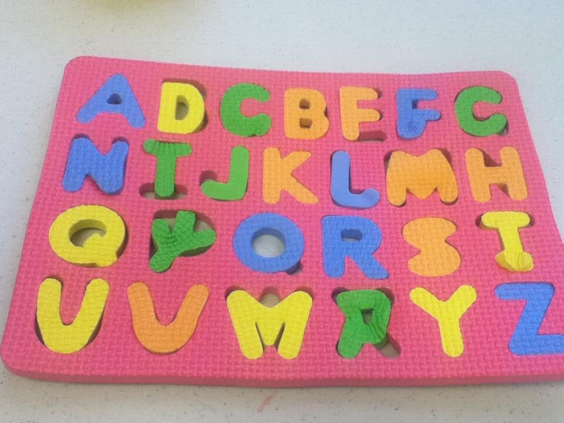
Hvor kommer data fra?
- Programmer
- Magasiner og scenarier
- Websites og Facebook-events
- Folk indsender rettelser
Men ...
- Programmer fortæller om verden før arrangementet
- Magasiner og scenarier rummer fejl
- Websites lukker
- Folk husker forkert
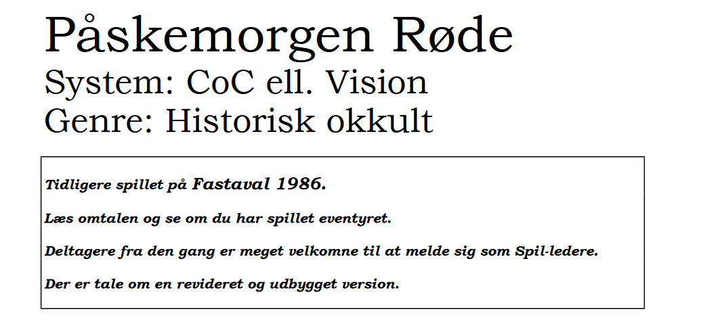
Fastaval 1987 og 1993
Censur, historierevision, oprydning?
- Folk vil ikke optræde i Alexandria
- Nogle personer er problematiske
- Folk skifter navn 🏳️⚧️
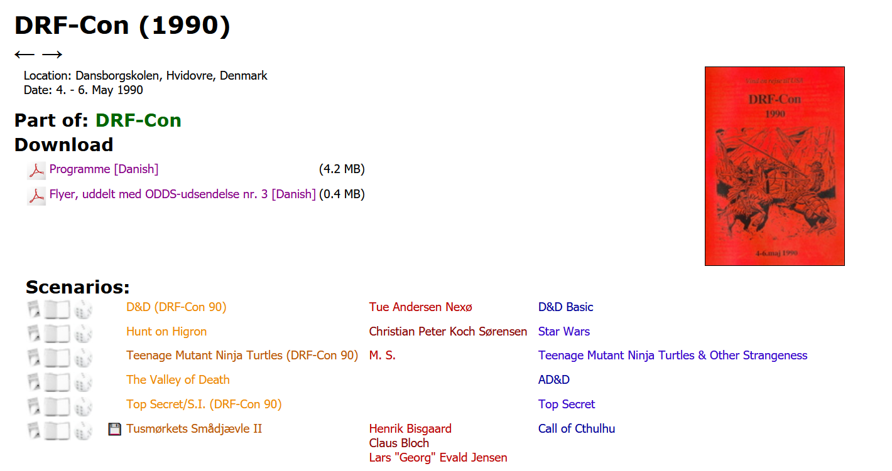
Alexandria bliver den autoritative kilde!
Fart på eventyret
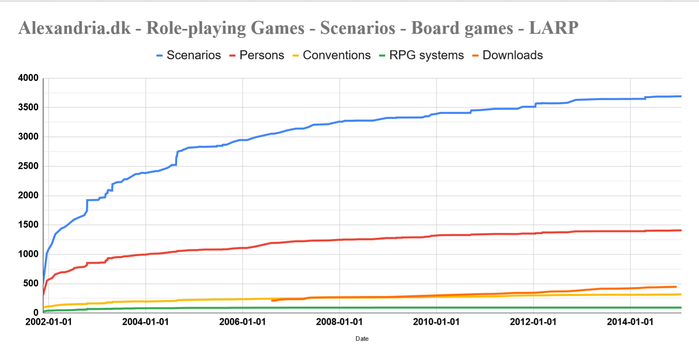
Side quest: Jost-spillet
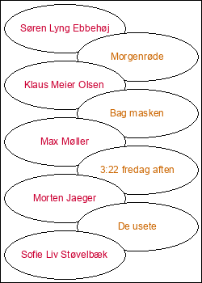
Flere spilpersoner!
Redaktører på Alexandria
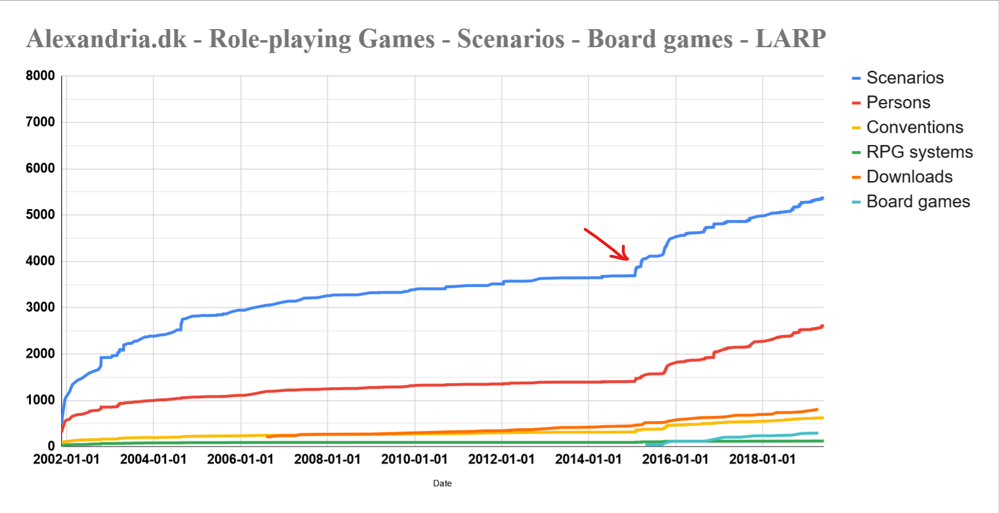
Næste skridt: Resten af verden
Random encounter: Henrik 🇸🇪
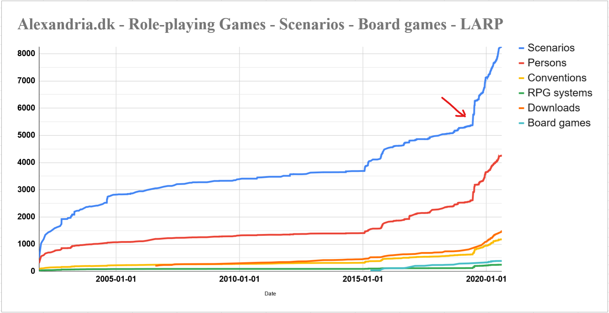
Hvordan går det med andres kampagner?
- Scenariedatabaser
- LiveForum
- RPGFORUM
- Nordic Larp Wiki
- Lajvhistoria.se
Gravrøveri
Skatte og XP!
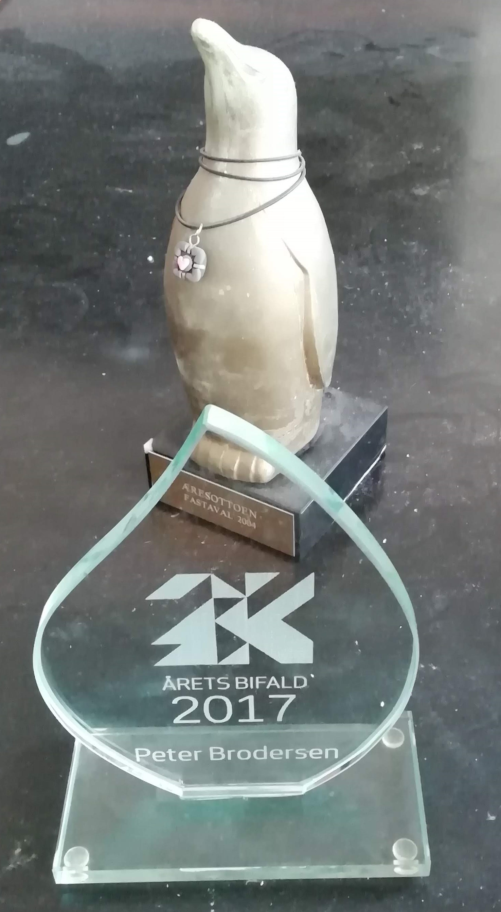
Skatte og XP!
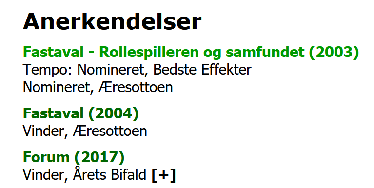
Offentlig kode og data
Status på loot
9.999 scenarier
Status på loot
10.000 scenarier
5.600 personer
1.400 kongresser
4.000 artikler
1.900 scenarier til download
1.400 kongresser
4.000 artikler
1.900 scenarier til download
Rollespilsmagasiner
- ROLLE|SPIL
- Rollespilleren
- Playground Magazine
- X3M
- Fønix
- Saga
Heltens tvivl
Server crash
Backup crash
Er det overhovedet det værd?
Problematisk indhold
Gaming in general is a male thing. [..] Everybody who's tried to design a game to interest a large female audience has failed. And I think that has to do with the different thinking processes of men and women.
- Gary Gygax
Problematisk indhold
- Racisme
- Sexisme
- Exceptionalisme
Alexandria lukker
Alexandria er større end mig selv
Fred er at skabe
(og nu er der markant backup!)
Hvad gør vi, hvis alt brager sammen?
Vi gør, hvad vi altid har gjort.
Vi sætter os ned og fortæller historier sammen.